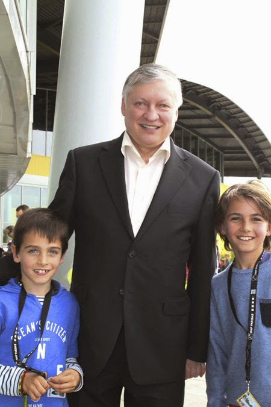

I always play football with my friends when i got the occasion and played in a football club from age 9 to age 15
After that I tried bouldering and got a satisfactory level in the summer of 2024 and continued to climb consitantly after that.
I begin playing chess when I was 6 and trained seriously until I was 14. I placed 9th,8th in respectively 2013 and 2015 in classical chess in my age category at the french championship, 7,9th in respectively blitz and rapid in 2014. I also placed first in rotterdam in 2015 and twice top 5 of the netherlands: once in 2014 and once in 2021 at the under 18 chammpionship.
Here is a photo i like of me (on the right) and my brother standing next to chess world champion Anatoly Karpov at the 2015 french championship.
contact main page